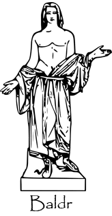

Introduction
Baldr ou encore Balder est un logiciel de lutte contre le plagiat et la fraude.
Inspir� des recherches en informatique th�orique, Baldr un logiciel qui r�alise la comparaison de documents en utilisant
des propri�t�s li�es � la compression.

Le nom du projet est tir� de la mythologie scandinave. Baldr (vieil islandais Baldr, latin Balderus) �tait un des Ases,
le fils d'Odin et de Frigg. Il est le dieu de l'innocence.